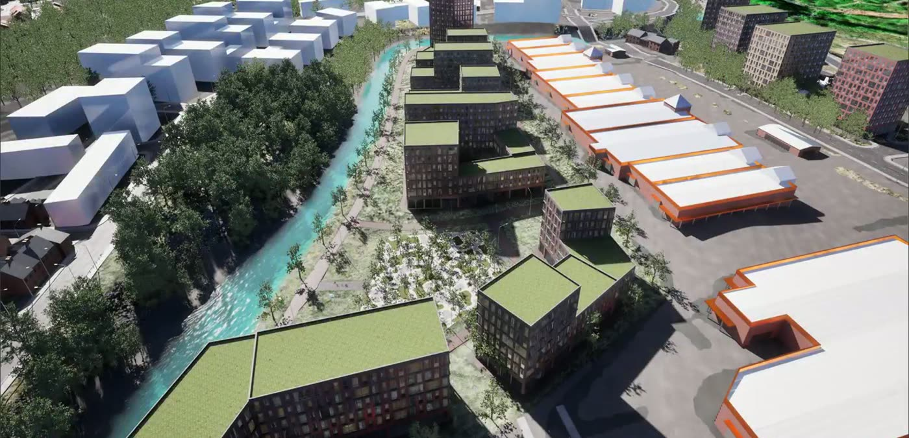

Planning, development and design, on a living twin.
Four services on one model. The twin is built once, georeferenced to a stated CRS, and every service below is a layer on it: planning scenarios, the live city, consultation and the dashboard that runs the place afterwards.
A living model of the site, district or city.
Terrain, parcels, networks, constraints and buildings assembled from GIS, BIM and open data into one georeferenced base in a stated CRS, then served as a web explorer anyone can open from a link. As planned, or as the place runs today.
- InRVT, IFC, 3DM, SKP, DWG, GPKG, GeoJSON, point clouds, 3D Tiles
- BaseContext layers, site or scheme massing, web explorer, full handover
- ScaleSite under 5 ha, district to 100 ha, city above, same base throughout


Hover a tile to play it. Recorded in the Stockport East twin.


Hover a tile to play it. Recorded in the Stockport East twin.
Test the scheme before you defend it.
Massing, density, phasing, solar, views and transit access modelled on the real site and compared option by option, with the numbers recomputing as the parameters move. Verified views and visual impact material for the application, so the case you take to committee is evidence, not artwork.
- ScenariosDensity, height, phasing and mix side by side in one view
- AnalysisSolar, viewshed, verified views, transit access, shadows at any hour
- EvidenceGFA, coverage and mix recomputed live, exported to the planning file
Test density like we do, live.
A toy version of our masterplan configurator, running right here. Drag the sliders and watch the scheme — and its numbers — regenerate. The full engine runs in Unreal, on your real site.
A simplified browser demo — indicative geometry only. The production configurator adds parking, set-backs, daylight and cost models.
The city as it runs, not just as it's drawn.
We connect the feeds a place already produces, traffic counters and signal systems, bus and rail real-time data, CCTV analytics, air-quality monitors, footfall sensors and building systems, and draw them onto the real place, updating as it happens, with the history behind it so patterns become decisions.
- ConnectTfGM and Bee Network, Network Rail Darwin, DEFRA AURN, SCOOT and UTMC, council CCTV, LoRaWAN, your own databases
- GetLive layers on the twin, a place dashboard, alerts on thresholds, a time scrubber to replay any day
- HandledCCTV as anonymised counts only, every feed under the data owner's terms, built for public-sector procurement and audit


Hover a tile to play it. Recorded in the Stockport East twin.


Hover a tile to play it. Recorded in the Stockport East twin.
Consultation people actually take part in.
Residents explore the proposal from their own street, compare it with what is there today, and pin comments to the place they mean. Everything is logged and exportable, so the consultation report writes itself and objections arrive informed. Once the place opens, the same twin becomes the dashboard that runs it.
- ResidentsWalk it from their own door, key views, shadows at any hour, comment in place
- OfficersModeration, themes, export to the planning file, a committee summary
- RoomsWeb link, media table, kiosk or headset from the same model
Leave a comment on the plan.
This is how consultation feels on our platforms. Click anywhere on the aerial, say your piece, pick a stance, and watch the record build. In the real thing, every pin is logged, mapped and exportable for the consultation report.

A demo: comments live only on this page and are never saved or sent. The production platform adds moderation, themes, exports and a full audit trail.
One model. Four ways to put it in the room.
A hosted web explorer for your place: layers, storylines and points of interest from one link, any device, no install.
A large touch surface for consultation events, exhibitions and committee rooms, plus permanent visitor-centre installations.
First-person and drone walkthroughs from the twin, as a web build or a VR piece for launches and public events.
Once the place opens, the same twin runs it: assets, occupancy, environment and footfall in one view with alerts on thresholds.
The full list of sixteen tools inside the explorer is on the capabilities grid.

Works with the tools you already use.
A twin is only useful if it takes what you already have. We read Revit, Rhino and Grasshopper models, SketchUp, AutoCAD and 3ds Max files, QGIS layers, Blender scenes and Excel schedules into one georeferenced base, and hand results back in the same formats.
- In RVT, IFC, 3DM, GH, SKP, DWG, DXF, MAX, FBX, GPKG, GeoJSON, SHP, XLSX
- Out GLB, FBX, 3D Tiles, IFC, GeoJSON, XLSX schedules, PNG and MP4 from the twin
- Live Grasshopper parameters and Excel mixes driving the model as sliders
Ways to work with the studio.
One site, three layers, in weeks.
- Context model in a stated CRS
- Capacity and massing options with numbers
- Web explorer for the pre-app conversation
Plan, test and consult on a whole district.
- Context, massing and mobility layers
- Scenario compare and engagement layer
- Live feeds and six months kept in sync
A whole town as a running twin, end to end.
- City-scale twin with feeds and place dashboard
- Ops wall, media table and headset builds
- Ongoing data integration and maintenance
Every engagement is scoped to the decision it has to support. Run the scope estimator for a tier and a timeline, then send us the boundary.
Ready to scope a twin?
Send us a site boundary. We'll recommend the layers, the tier and a timeline.